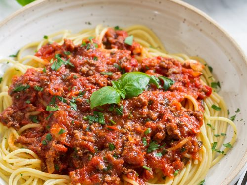

Simple Spaghetti!
Homepage

Simple Homemade Spaghetti Dish
Spaghetti is a classic italian dish that consists of a sauce, a type of Pasta, and if desired, ground beef or meatballs.
This is a simple recipe for Spaghetti that is easily made at home with minimal skill and ingredients.
Ingredients:
- Pasta of your choice (Most commmon is angel hair pasta)
- Spaghetti sauce of your choice (My personal favorite is marinara flavored with meat)
- (Optional) 1 pound of ground Beef or Meatballs (You may also substitute with other meat options. ex: Ground Turkey)
- (Optional) Seasonings of your choice
Directions:
- Fill medium pot with water and bring to a boil
- Once water is boiling go ahead and add in your pasta and cook until noodles are at your desired softness (Add salt for flavor if desired)
- Next, cook your meat of choice or meatballs in a skillet until fully cooked and season to your desired taste
- Once the pasta is done, drain the water with a strainer and add back into the pot
- Finally, add your meat of choice and your pasta sauce into your cooked pasta
- Let cool for atleast 5 minutes, serve and enjoy! (garnish with basil or parsley if you'd like or even add parmesan cheese on top!)
Nicely done! you've successful made a simple homemade Spaghetti dish! Enjoy!